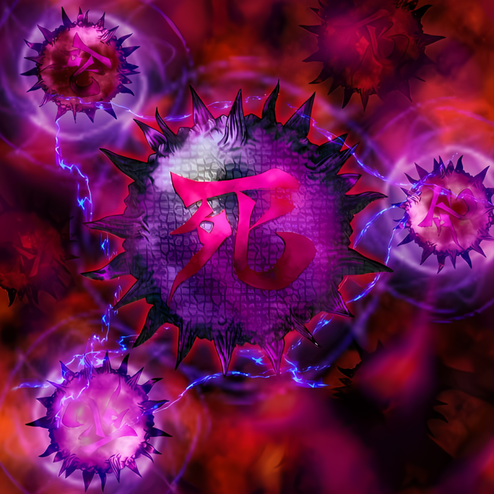
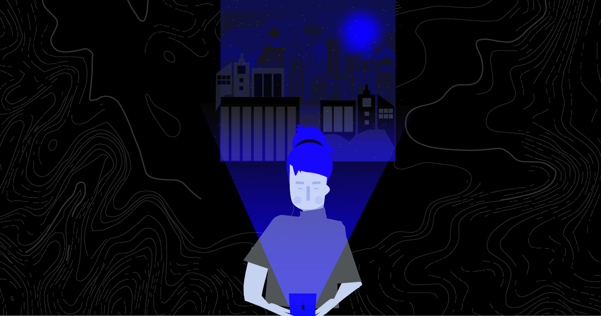

Futaba _ Webs 🕸🕸🎃🕸🕸
- The Hacker Who Laughs 🕸🕸🎃🕸🕸, Founder at Futaba_Webs 🕸🕸🎃🕸🕸
🎃 Services
🎃 Business Card
🎃 Terminal
🎃 Discord Server
🎃 Blog
🎃 Get started
🎃 Resume
🎃 Search Mode
🎃 Latest News
🎃 Catalogs
🎃 Services 2
The Hacker Who Laughs 🕸🕸🎃🕸🕸
🕸 Botnet 🕸
🕸 ARP Poisoning 🕸
🕸 CCTV Hacking 🕸
🕸 SQL Injection 🕸
🕸 LAN Turtle 🕸
🕸 Ransomware 🕸
🕸 Resources 1 🕸
🕸 MITB Exploit 🕸
🕸 Bypassing Tor 🕸
🕸 WIFI Hacking 🕸
🕸 WiCyS 🕸
🕸 Security Dev 🕸
🕸 Evil Twin Attack 🕸
🕸 Malware Types 🕸

🕸 Cipher Analysis 🕸
🕸 Mobile Hacking 🕸
🕸 NOT Cyber? 🕸
🕸 Totsugeki 🕸
🕸 Mentorship 🕸

🕸 Persona! 🕸
Previous
1
2
3
4
Next
🕸 Mobile Security 🕸
🎃 CONTACT ME
AnOnYmOuS
futaba.webs@gmail.com
New York, NY United States
Search Mode
🕸🎃🕸 CLOSE 🕸🎃🕸
How_to_Botnet
ARP_Poisoning
CCTV_Hacking
SQL_Injection
LAN_Turtle
Ransomware
2024 Resources 1
MITB_Exploit
Bypassing_Tor
Wifi Hacking
Women's History Month
Security Engineering
Evil Twin Attack
The Virus Archetype
Mobile Hacking
Cipher Text Analysis
Totsugeki
How NOT to Cyber
How to Find a Mentor
Hacking PERSONA!
DANGER! Mobile Devices